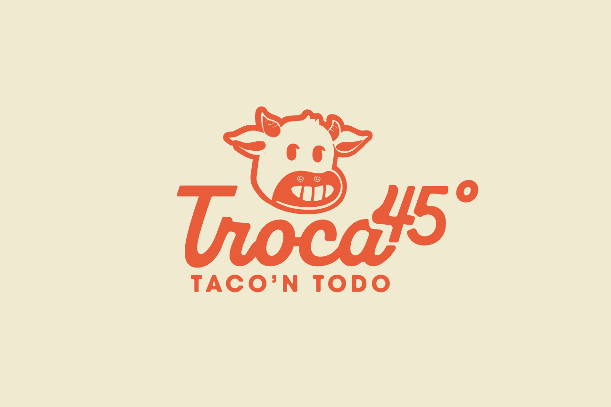
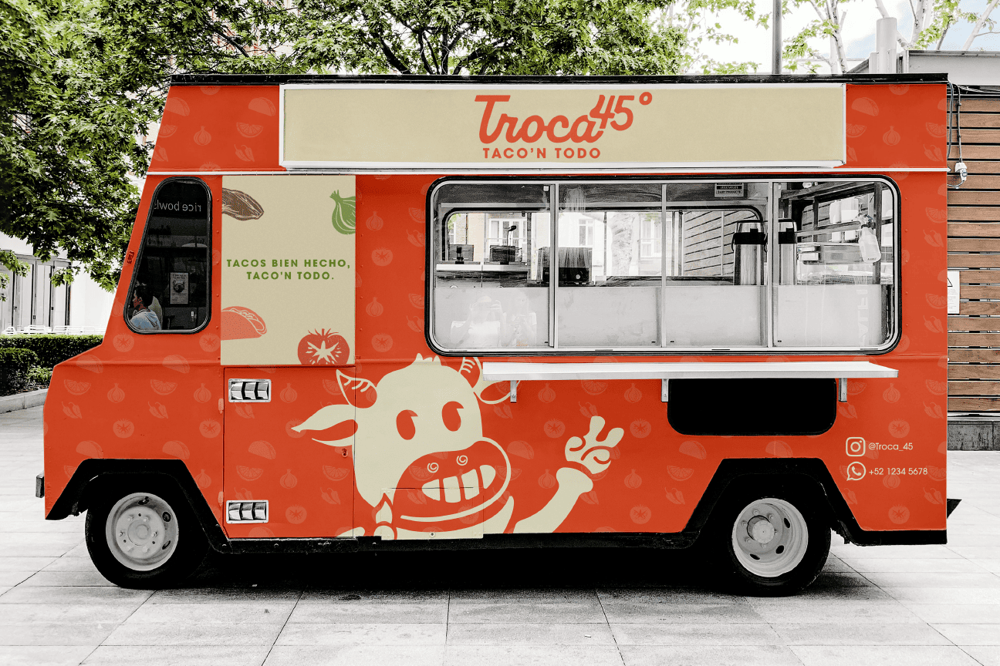
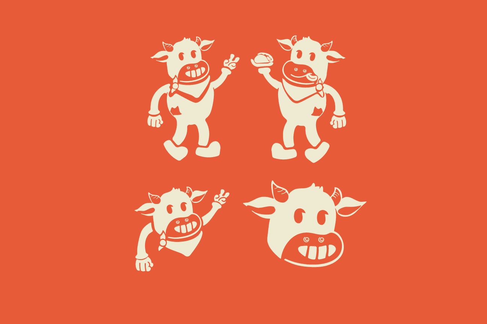
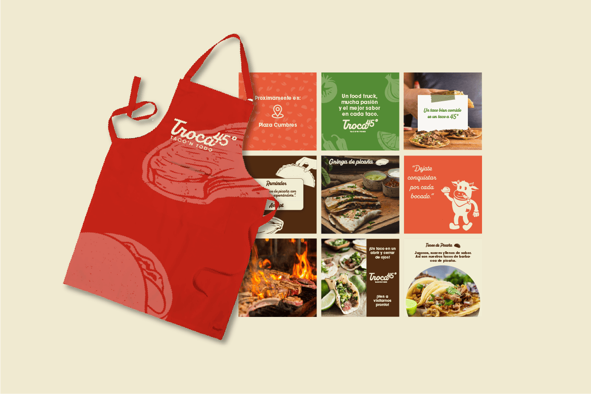

Identity Design
Academic project developed for the conceptual launch of “Troca 45°,” a food truck rooted in the rustic and artisanal culinary traditions of Cumbres, Cancún.
The objective was to create a visual identity that reinterprets the essence of Mexican street food through a modern, minimal lens, emphasizing bold angles, earthy tones, and handcrafted textures.
This project explores the intersection of authenticity and innovation by developing a cohesive graphic system, brand collateral, and environmental applications that reflect the unique 45-degree
approach to serving tacos; an experience where tradition meets contemporary design thinking.



